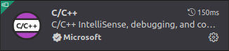
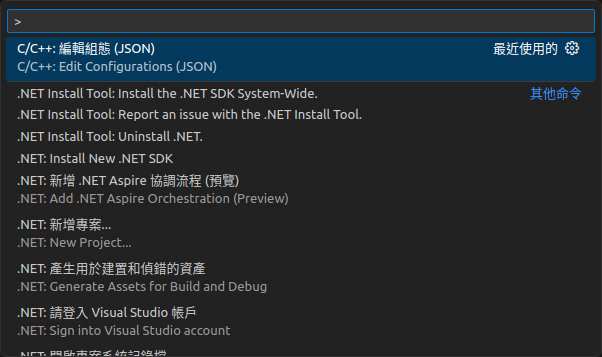

程式碼編輯環境
Git Repository
依照官方網站使用指令 clone 下來的原始碼使用 submodule 管控各個模組，如果未來不考慮 PR，建議移除這些 submodule 關聯，將全部原始碼建立到同一個 Git 儲存庫會比較好管理修改的內容。
原始碼目錄結構如下：
ndnSIM
├── ns-3 // modified version of NS-3 for ndnSIM
│ └── src
│ └── ndnSIM
│ ├── NFD // submodule of ndnSIM
│ │ └── websocketpp // submodule of NFD
│ └── ndn-cxx // submodule of ndnSIM
└── pybindgen
應該不會動到 ns-3 的原始碼，ns-3 與 ndnSIM 之間也不存在 submodule 關聯。需要處理的是 ndnSIM 目錄中的關聯，從樹狀結構最尾端的 websocketpp 開始向上處理，大概需要移除以下檔案／目錄：
* 必須刪除：
* .git
* .gitmodules
* 建議刪除
* .github
* .travis.yml
* .jenkins
* .jenkins.d
* 保留
* .gitignore（不同模組忽略的檔案不盡相同）
如果要保留 submodule，請注意 ndnSIM 2.9 引用的模組版本為 :arrow_right: NFD version 22.02、:arrow_right: ndn-cxx version 0.8.0，使用 git clone --recursive 時就自動抓取這些版本。
程式編輯器
本篇論文在研究時，主要在 Ubuntu 上使用 Visual Studio Code 編輯程式碼。此處參考下方文章設定 VS Code 以便閱讀、編輯程式碼。編譯部分由 ns-3 的 waf 處理。
* ndnSIM学习（二）——配置VScode的跨文件转到定义 https://blog.csdn.net/MamiyaHasaki/article/details/120582082
設定 Go To Definition
-
安裝擴充元件：C/C++
 -
用 VSCode 開啟
ndnSIM目錄，點選ndnSIM下的.vscode目錄，以快捷鍵F1或Ctrl + Shift + P執行命令：C/C++: Edit Configuration (JSON)  -
在
.vscode目錄中會出現一個c_cpp_properties.json設定檔，裡面有預設值。將includePath設定值修改為~/ndnSIM/ns-3/build/**。
{ "configurations": [ { "name": "Linux", "includePath": [ "~/ndnSIM/ns-3/build/**" ], "defines": [], "compilerPath": "/usr/bin/gcc", "cStandard": "c17", "cppStandard": "gnu++14", "intelliSenseMode": "linux-gcc-x64" } ], "version": 4 }